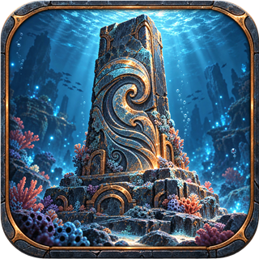
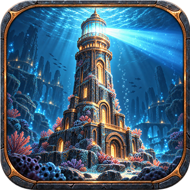
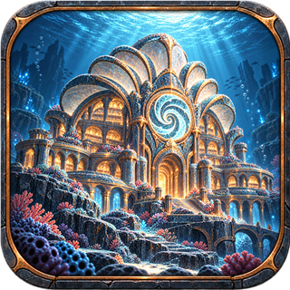
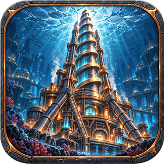

原始纪 · 石刻遗迹
海潮方碑
高耸石碑与潮汐旋纹，代表最早的海底文明纪念物。
轮廓：方碑 / 潮纹四座代表奇观 · 同一构图语言 · 独立主体插画

高耸石碑与潮汐旋纹，代表最早的海底文明纪念物。
轮廓：方碑 / 潮纹
尖塔与发光灯室形成清晰高耸剪影，强调远航指引。
轮廓：高塔 / 灯束
贝壳穹顶与环形潮纹，表现收藏知识的宏伟馆藏。
轮廓：穹顶 / 馆藏
螺旋钻头、承力支架与冰壳背景，突出工业突破感。
轮廓：钻头 / 机械塔